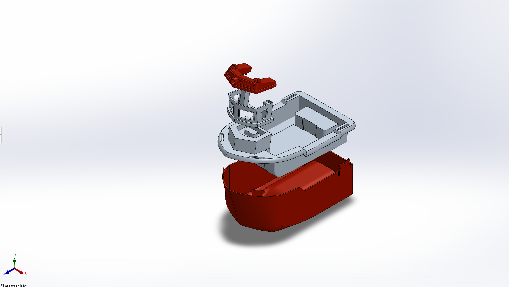
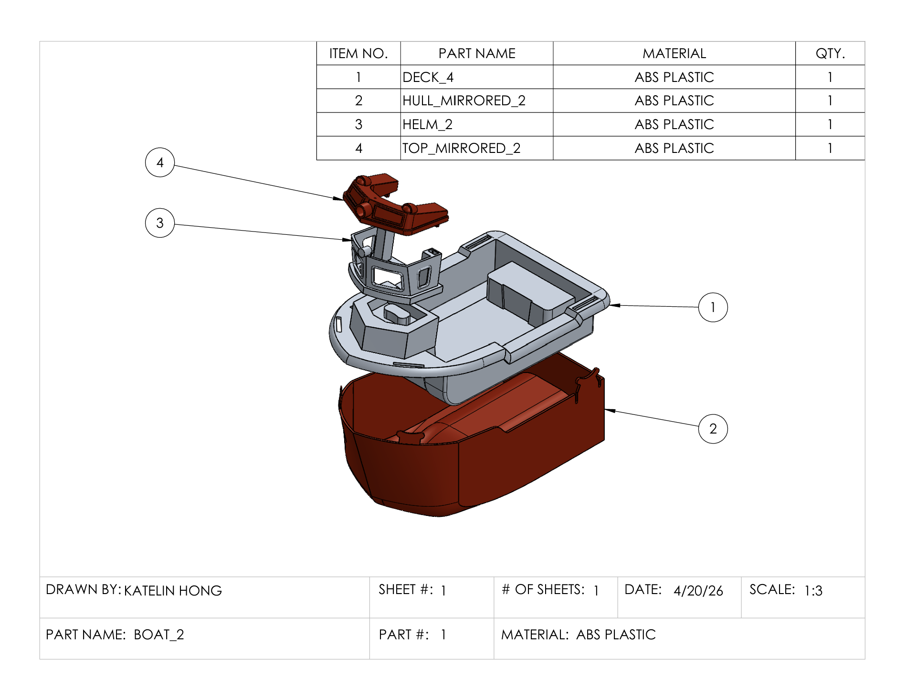
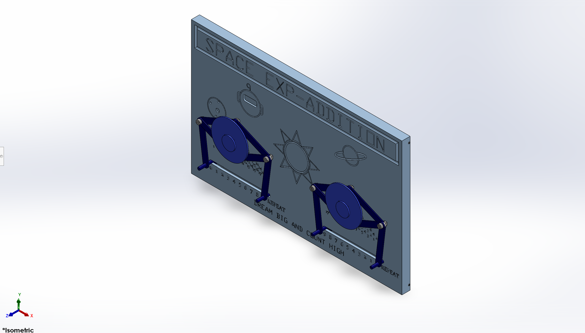
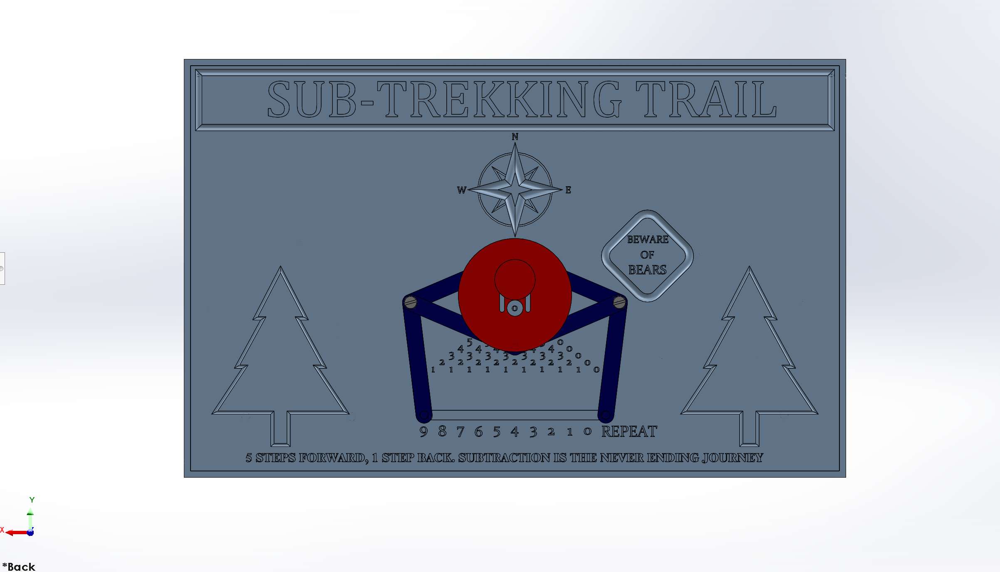
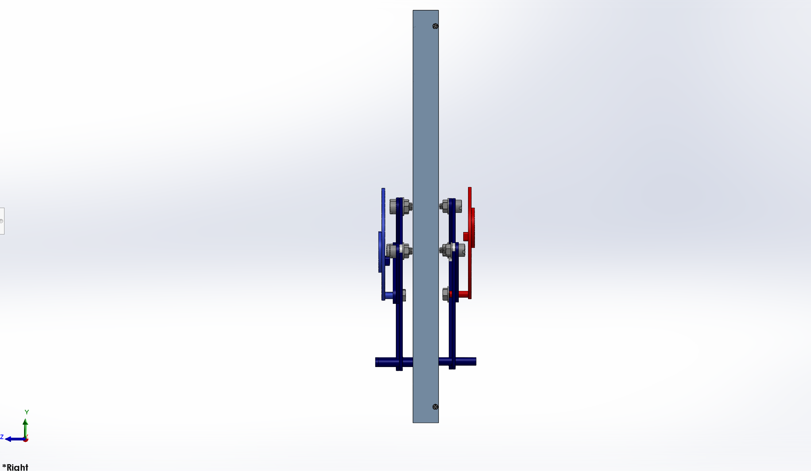
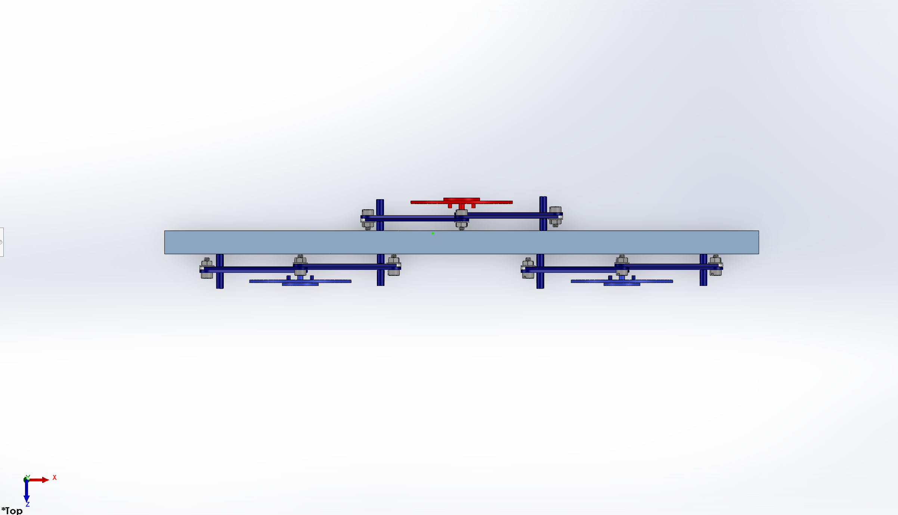

Hello, visitor! I am Katelin, a resourceful, handy, and explorative student in Columbia University's Class of 2028.
Creating is my favorite activity. I love learning anything related to mechanical engineering to understand the way existing things work, and to create new systems that will better serve people.
During my first two years of college, I have explored roles in environmental planning for urban infrastructure, making operation strategies to strengthen the electrical grid, and designing solar/battery systems plus the development plans for communities. These experiences have developed my skills in conceptual system design and quantitative analysis in addition to enriching my perspective on the way engineering interacts with people and the environment.
Through my mechanical engineering coursework and projects, I have also discovered that I am most energized in technical, hands-on environments where I can design, build, and test physical systems.
I am looking for a new challenge to explore. If you have one in mind, email me at klh2187@columbia.edu.
-


Boat Computer Model
Objective: Reverse engineer a toy boat and recreate it as a detailed 3D CAD assembly in SolidWorks.
Contribution: Measured each component and produced hand-drawn engineering sketches. Modeled the individual parts in SolidWorks and assembled them into a complete digital replica. Preserved aesthetic details and realistic attachment points so that every component was physically supported as in the original product.
Skills built: SolidWorks part modeling, assembly modeling, reverse engineering, and applying physical measurements to a CAD model.
-




Addition and subtraction toy
Objective: Design a mechanical toy that teaches 4-7 year old children to add and subtract single digits. The toy had to go beyond simple counting, improve on an existing concept or introduce a novel one, avoid loose parts, and exclude negative numbers.
Contribution: Researched early arithmetic education and existing educational toys, then developed a design that met the learning and safety requirements while being engaging for a young child. Modeled all custom components in SolidWorks, assembled the complete toy with standard off-the-shelf hardware, and created a full engineering drawing packet.
Skills built: SolidWorks part modeling, assemblies, and engineering drawings; market and product research.
-
Two-wheel slot machine
Objective: Design a digital system that simulates the gameplay of a two-wheel slot machine.
Contribution: Designed a digital circuit that controls two independently stopping wheels (implemented as counters), stores their states, and determines win/lose outcomes using sequential and combinational logic. Built, tested, and refined the system in Logicly.
Skills built: Digital circuit design, combinational and sequential logic, Logicly
-
Data driven model to determine the optimal minimum wage in NYC
Objective: Test whether an appropriate minimum wage for present-day NYC could be estimated by adjusting a historically strong minimum wage for inflation.
Contribution: Developed the hypothesis and wrote the Python code to clean and analyze NYC minimum wage and CPI data, calculate annual inflation rates, and determine what the 1968 minimum wage would be today if it had grown with inflation. Interpreted the results and identified why inflation alone was insufficient to determine an ideal minimum wage.
Skills built: Python, Pandas, Plotly, data cleaning, data visualization, data interpretation